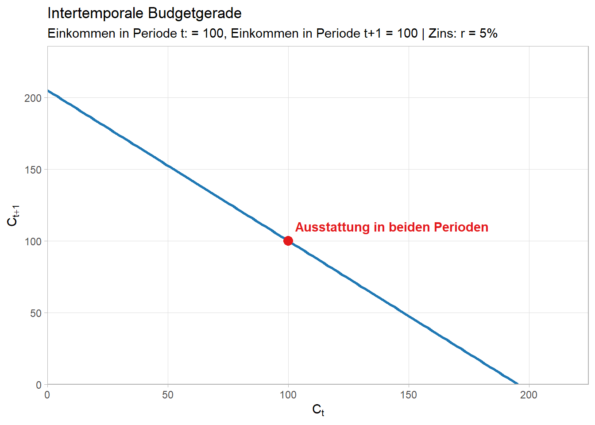

Code
library(ggplot2)
# --- 1. Parameter festlegen ---
Y_t <- 100 # Einkommen in Periode t
Y_tp1 <- 100 # Einkommen in Periode t+1
r <- 0.05 # Zinssatz
# --- 2. Daten für die Budgetgerade erzeugen ---
# Maximaler Konsum in Periode t (falls C_{t+1} = 0)
max_Ct <- Y_t + Y_tp1 / (1 + r)
# Datenrahmen mit C_t Werten und berechneten C_{t+1} Werten
budget_data <- data.frame(
C_t = seq(0, max_Ct, length.out = 100)
)
budget_data$C_tp1 <- (1 + r) * (Y_t - budget_data$C_t) + Y_tp1
# Ausstattungspunkt (Endowment)
endowment <- data.frame(C_t = Y_t, C_tp1 = Y_tp1)
# --- 3. ggplot2 Visualisierung ---
p <- ggplot(budget_data, aes(x = C_t, y = C_tp1)) +
# Budgetgerade
geom_line(color = "#1f78b4", linewidth = 1.1) +
# Ausstattungspunkt einzeichnen
geom_point(data = endowment, aes(x = C_t, y = C_tp1), color = "#e31a1c", size = 3.5) +
annotate("text", x = endowment$C_t, y = endowment$C_tp1,
label = " Ausstattung in beiden Perioden", parse = FALSE,
color = "#e31a1c", hjust = 0, vjust = -1, fontface = "bold") +
# Achsenlimits und -ursprung bei (0,0)
scale_x_continuous(expand = c(0, 0), limits = c(0, max_Ct * 1.15)) +
scale_y_continuous(expand = c(0, 0), limits = c(0, ((1 + r) * Y_t + Y_tp1) * 1.15)) +
# Beschriftungen (mit mathematischen Ausdrücken)
labs(
title = "Intertemporale Budgetgerade",
subtitle = paste0("Einkommen in Periode t: = ", Y_t, ", Einkommen in Periode t+1 = ", Y_tp1, " | Zins: r = ", r * 100, "%"),
x = expression(C[t]),
y = expression(C[t+1])
) +
# Akademisches Theme
theme_light(#base_size = 13
) +
theme(
panel.grid.minor = element_blank(),
# plot.title = element_text(face = "bold", hjust = 0.5),
# plot.subtitle = element_text(hjust = 0.5, color = "gray40"),
# axis.title.x = element_text(face = "italic" #, size = 14
# ),
# axis.title.y = element_text(face = "italic", # size = 14,
# angle = 0, vjust = 0.5)
)
# Plot anzeigen
p